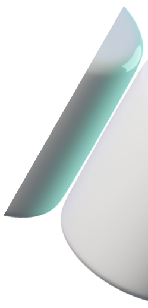
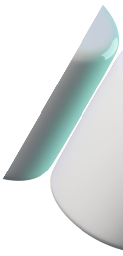

Делайте снимки и записывайте экран в 1 клик
Вместе со Screenshoter можно в один клик сделать снимок или записать происходящее на экране ПК, чтобы поделиться с кем угодно Скачать бесплатно
Бесплатная программа
для Windows

для Windows


 



 
